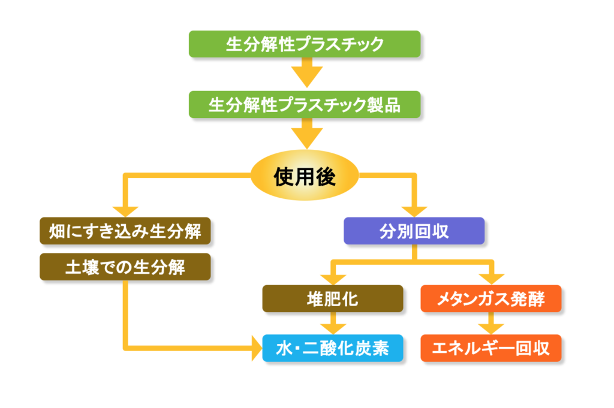

海洋ごみプラスチック問題：解決策
生分解性プラスチック
生分解性プラスチックにすることで...
処理速度と処理コストが減ることによって、不法投棄などで海に流れ出るプラスチックの量が減る!
海に出たとしても、水中で分解されるため、生物を殺すことになる可能性は低い!
生分解性プラスチックとは？
通常のプラスチックと同様に使うことができ、使用後は自然界に存在する微生物の働きで最終的に水と二酸化炭素に分解され自然界へと循環するプラスチック。食品残渣等を生分解性プラスチックの収集袋で回収、堆肥化・ ガス化することにより、食品残渣は堆肥やメタンガスに再資源さ れ、収集袋は生分解されるため、廃棄物の削減に繋がる。 また、マルチフィルムを生分解性プラスチックにすれば、作物収穫後にマルチフィルムを畑に鋤き込むことで、廃棄物の回収が不要 となり、発生抑制に繋がる。
ポリ乳酸
とうもろこしなどの澱粉から合成され、毎年繰り返して育てられるとうもろこしや芋などの再生可能資源を使用しているため。自然循環型の素材として注目を浴びている。
PHBH
PHBHは、植物油などを原料に微生物により生産されたポリマーです。 自然界に存在する多くの微生物により生分解され、最終的には二酸化炭素と水になります。
生分解性プラスチックのメリット
海洋プラスチックごみ問題解決
海洋プラスチックごみの海洋環境への影響低減
プラスチックの3Rの問題
プラスチック廃棄物の焼却から生物処理への転換による循環利用率の向上によって、間接的に海洋への流出を防ぐ。
他にも、
枯渇性資源の問題解決
地球温暖化の問題
などが存在する。

土壌上と海洋中の分解性の違い